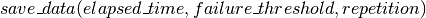
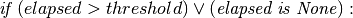
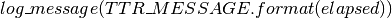
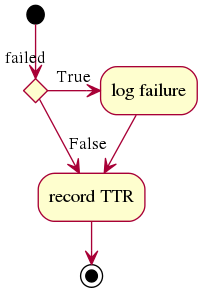
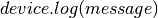

TimeToRecoveryTest Algorithms
The TimeToRecoveryTest contains the algorithm for a single test to determine the length of time it takes for a device to recover its connection.
The TimeToRecoveryTest Algorithms
TimeToRecoveryTest.run(parameters)
- 
TimeToRecoveryTest.save_data(elapsed, threshold, repetition)


-

TimeToRecoveryTest.log_message(message)
- 